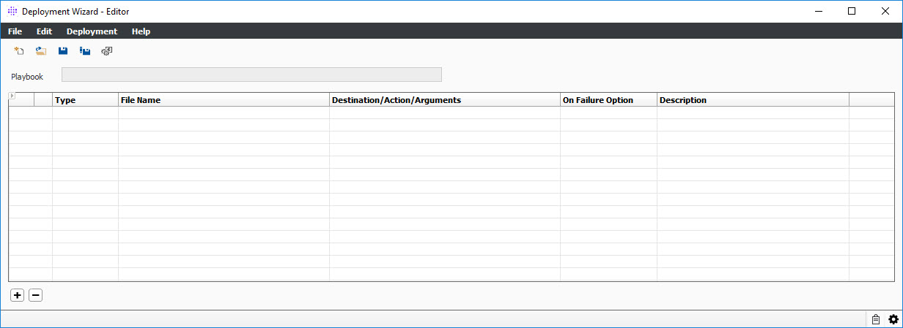

The Deployment Wizard is an organizational tool allowing you to apply configuration components (artifacts) in a specific step order for the OpenLink application. A deployment is made up of configuration components (artifacts) and these can be files, CMM packages, custom SQL, document templates, Java or Open Components JAR’s and/or DLL’s. In many cases, these artifacts need to be applied in a specific order to ensure that everything works correctly (orchestration).
Note: There are multiple ways to access this window; however, only one way is defined because some features can only be accessed via this procedure.
1. From OpenLink Central, right-click anywhere on the header and select Launch Available Services. The Launch Available Services window displays.
2. Type Deployment Wizard in the Filter Service field, select Deployment Wizard - Editor in the Available Services panel, and then click Launch. The following windows displays:
Deployment Editor panel is used for creation, organization and generation of deployment playbooks.

This window contains the following menu items specific to the Deployment Wizard Editor:
Menu |
Item |
Description |
File |
New Playbook |
This will clear the grid suitable for starting a new playbook setup. If you have un-saved changes to an existing playbook you will be prompted to either discard them or cancel the operation. |
Load Playbook |
This will open a file chooser allowing you to select a previously created and saved playbook (playbook.json) or generated playbook (playbook.zip). The playbook will be loaded into the panel ready for editing. If you have un-saved changes to an existing playbook you will be prompted to either discard them or cancel the operation. |
|
Save Playbook |
This will save changes made to your playbook, if you had edited a loaded a playbook it will save the changes to the loaded file. If this was a brand new playbook (created from scratch) then this will open a Save Playbook As… location chooser. When you save a new playbook file it will be automatically given the extension playbook.json to provide for quick identification. | |
| Save Playbook As… | This will allow you to save your playbook with another file name and provides you with a suitable location chooser. When you save a new playbook file it will automatically be given the extension playbook.json to provide for quick identification. |
|
| Convert to Relative Path | This menu item will allow you to update your playbook and convert all of the Step source files to use Relative Paths (if possible) based on the location of the playbook file. Note: The use of Relative Pathing is strongly recommended if you intend to share development of playbooks and to check-in the playbook files into a source code control system. |
|
|
Convert to Absolute Path |
This menu item will convert all of the steps in your playbook to absolute pathing. |
Edit |
Add Step |
This menu item (or button) will append a new / empty “Copy File” step to the playbook. There is also a right-click menu option that will append a Step / row as long as the mouse cursor is over an empty grid area. |
Delete Step |
This menu item (or button will only be active if you have selected an existing step. It will remove the selected Step from the playbook. There is also a right-click menu option that will allow you to delete a selected Step / row. The ‘delete’ key will also remove the currently selected Step / row as well. | |
| Deployment | Generate Deployment | This menu item will allow you to take a deployment and generate an associated zip with copies of all of the original files ready for system integration testing. |
| Run Deployment | This menu item will allow you to run a test deployment. Once you have saved the playbook that you want to test / run it will invoke the Deployment Wizard – Runner to perform the work. |
|
|
Additional Information |
This menu item will allow you to add (optional) additional information about the deployment. The dialog provides space for a Deployment Version and suitable space for a Deployment Description. |
|
Review Any Deployment | Review the selected deployment. |
| Help | Deployment Wizard - Playbook Editor
|
Loads this help topic. |
About |
Opens the About window. |